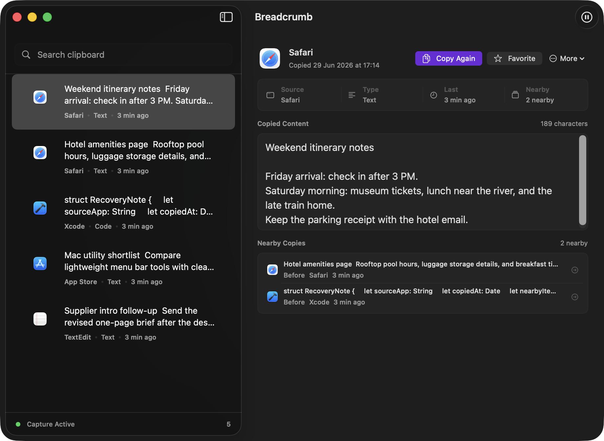

Search by what you remember
Find copied text, links, code-like snippets, email-like text, image entries, and source app labels from one Mac-native search surface.
Breadcrumb helps you find what you copied, remember which app it came from, and recover nearby copied items without sending your clipboard to a cloud service.

Quick answer
Breadcrumb is a native macOS clipboard history app from Stonebird Labs. It helps Mac users recover copied text, links, code-like snippets, and images with source app context, local-first storage, fast search, and nearby copied items. It is pre-launch and does not promise cloud sync or account-based clipboard storage.
Problem
Most clipboard mistakes are not caused by forgetting that something was copied. They happen because you cannot remember which copied fragment belonged to which app, client, document, or workflow.
Find copied text, links, code-like snippets, email-like text, image entries, and source app labels from one Mac-native search surface.
Breadcrumb stores frontmost app context for each captured clipboard event, so a copied item can carry its origin instead of becoming an anonymous row.
No cloud sync, accounts, analytics, screen recording, keystroke logging, or broad browser history capture is part of the launch promise.
Solution
Open the Quick Panel, type a few characters, move with the keyboard, and copy again. When an item needs more inspection, open the main window to review content, source details, copy count, and nearby copies.

Designed as a transient command surface for fast recall from the keyboard.
Built for slower recovery when you need provenance, copied content, and nearby context.
Practical examples
Related guides
FAQ
Yes. Breadcrumb is a native macOS clipboard history app focused on fast search, source app context, and local-first storage.
No. The launch product is local-first and Mac-only. There is no cloud sync, account system, analytics SDK, or collaboration layer in the launch promise.
Breadcrumb captures the frontmost source app for clipboard events. It does not currently promise browser URL capture, broad browser history, screen recording, or keystroke logging.
The intended distribution model is a paid Mac App Store download, but the public launch link is not live yet. Use the launch-notice link if you want to be notified.
Launch
Breadcrumb is being prepared as a premium native Mac utility, with privacy and source context treated as product requirements rather than marketing decoration.